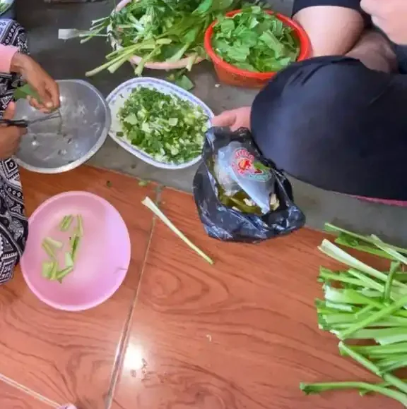

Daftar Isi
- Gambaran besar: genetik dan lingkungan
- Seberapa besar peran genetik: studi kembar dan populasi
- Gen risiko yang sudah ditemukan
- Diwariskan atau mutasi baru (de novo)
- Temuan 2025: kelompok autisme dengan pola genetik berbeda
- Faktor kehamilan dan kelahiran yang didukung bukti
- Yang terbukti bukan penyebab autisme
- Bagaimana dengan tes genetik?
- Apa artinya bagi orang tua
- Pertanyaan yang sering diajukan
"Apa yang menyebabkan anak saya autis?" adalah salah satu pertanyaan pertama yang muncul setelah orang tua menerima diagnosis. Di balik pertanyaan itu sering ada rasa bersalah: apakah karena makanan saat hamil, karena vaksin, karena terlalu sibuk bekerja, atau karena kurang mengajak anak bicara. Sayangnya, informasi di media sosial sering memperbesar rasa bersalah itu dengan klaim yang tidak berdasar.
Artikel ini merangkum apa yang sungguh-sungguh ditemukan oleh penelitian, terutama penelitian genetik berskala besar yang terbit antara tahun 2016 dan 2025. Setiap angka di sini kami ambil langsung dari abstrak atau teks penelitiannya, lengkap dengan tahun terbit, supaya Anda bisa memeriksanya sendiri. Jika Anda mencari penjelasan yang lebih ringkas dan umum, baca dulu apa penyebab autis pada anak. Untuk pengertian dasar autisme, lihat panduan autisme.
Gambaran besar: genetik dan lingkungan
WHO menjelaskan bahwa kemungkinan ada banyak faktor yang membuat seorang anak lebih mungkin autis, termasuk faktor lingkungan dan genetik. NICHD, lembaga kesehatan anak di bawah NIH Amerika Serikat, menyebut banyak bukti mendukung bahwa gen adalah salah satu penyebab utama atau penyumbang besar autisme, dan bahwa autisme kemungkinan besar tidak berasal dari satu penyebab, melainkan gabungan beberapa penyebab.
Supaya tidak salah paham, ada tiga istilah yang perlu disepakati. Faktor genetik adalah perbedaan pada DNA, baik yang diwariskan dari orang tua maupun yang muncul baru. Faktor lingkungan dalam penelitian autisme tidak berarti suasana rumah atau cara mendidik. Yang dimaksud adalah hal-hal biologis di luar DNA, misalnya kondisi kehamilan, obat tertentu, infeksi, atau kelahiran prematur. Faktor risiko berarti sesuatu yang lebih sering ditemukan pada anak autis, bukan sesuatu yang pasti menyebabkan autisme.
National Autistic Society, organisasi autisme terbesar di Inggris, merangkumnya dengan lugas: kebanyakan orang autis menjadi autis karena gen yang mereka terima dari orang tua, dan faktor lain yang lebih jarang biasanya bekerja bersama gen tersebut, bukan sendirian. Gambaran ini konsisten dengan penelitian yang kami bahas di bawah.
Seberapa besar peran genetik: studi kembar dan populasi
Cara klasik untuk mengukur peran genetik adalah membandingkan kembar identik (yang berbagi hampir seluruh DNA) dengan kembar tidak identik atau saudara kandung biasa (yang berbagi sekitar separuh DNA). Kalau kembar identik jauh lebih sering sama-sama autis, berarti genetik berperan besar. Hasil perhitungannya disebut heritabilitas.
Satu hal penting sebelum melihat angkanya: heritabilitas 80 persen tidak berarti peluang seorang anak menurunkan autisme adalah 80 persen. Heritabilitas adalah ukuran tingkat populasi, yaitu seberapa besar perbedaan risiko autisme antarorang di suatu populasi dapat dijelaskan oleh perbedaan genetik. Angka ini tidak bisa dipakai untuk meramal satu anak atau satu keluarga.
| Penelitian (tahun terbit) | Data yang dipakai | Temuan heritabilitas |
|---|---|---|
| Tick dan rekan, meta-analisis studi kembar (2016) | 7 studi kembar yang memenuhi kriteria, ditambah sampel populasi 6.413 pasang kembar | 64 sampai 91 persen; korelasi pada kembar identik 0,98 |
| Sandin dan rekan, JAMA (2017) | Anak lahir di Swedia 1982 sampai 2006: 37.570 pasang kembar dan lebih dari 2,6 juta pasang saudara kandung; 14.516 anak terdiagnosis autisme | 83 persen (rentang keyakinan 79 sampai 87 persen) |
| Bai dan rekan, JAMA Psychiatry (2019) | 2.001.631 anak lahir 1998 sampai 2011 di Denmark, Finlandia, Swedia, Israel, dan Australia Barat; 22.156 terdiagnosis autisme | Median 80,8 persen; antarnegara berkisar 50,9 persen (Finlandia) sampai 86,8 persen (Israel); efek maternal 0,4 sampai 1,6 persen |
Penelitian yang paling sering dikutip adalah studi lima negara oleh Bai dan rekan di JAMA Psychiatry tahun 2019. Penelitian ini mengikuti lebih dari dua juta anak sampai usia 16 tahun. Kesimpulannya, heritabilitas autisme diperkirakan sekitar 80 persen, yang berarti variasi kejadian autisme di populasi sebagian besar dipengaruhi faktor genetik yang diwariskan. Peneliti juga tidak menemukan dukungan untuk kontribusi efek maternal, yaitu pengaruh kondisi ibu di luar gen yang diturunkannya, yang diperkirakan hanya 0,4 sampai 1,6 persen.
Penelitian Sandin dan rekan di JAMA tahun 2017 memakai data Swedia dan mendapatkan angka 83 persen. Sementara itu, meta-analisis Tick dan rekan tahun 2016 yang menggabungkan studi kembar sebelumnya mendapatkan rentang 64 sampai 91 persen, dan menyimpulkan bahwa autisme terutama disebabkan oleh pengaruh genetik yang kuat.
Apa artinya sisa sekitar 20 persen? Bagian itu dijelaskan oleh faktor nongenetik, terutama faktor yang tidak sama antara dua saudara, seperti kondisi di dalam kandungan atau saat kelahiran. Porsi lingkungan yang dibagi bersama oleh saudara kandung, seperti suasana rumah yang sama, ternyata kecil. Dalam model lengkap penelitian Swedia 2017, porsinya diperkirakan hanya 4 persen, dan model terbaik penelitian itu bahkan tidak memerlukannya. Meta-analisis 2016 memang menemukan porsi lingkungan bersama yang lebih besar bila prevalensi autisme diasumsikan rendah, tetapi penulisnya tetap menyimpulkan pengaruh genetik yang kuat.

Gen risiko yang sudah ditemukan
Kalau genetik berperan besar, gen mana yang terlibat? Jawabannya: banyak sekali. NICHD menyebut lebih dari 100 gen di berbagai kromosom mungkin terlibat dengan kadar yang berbeda-beda. NICHD juga mengingatkan bahwa hubungannya rumit: kebanyakan orang autis memiliki kombinasi perubahan gen yang berbeda, dan banyak orang yang tidak autis juga membawa sebagian perubahan gen yang dikaitkan dengan autisme.
Penelitian genetik autisme bergerak sangat cepat dalam satu dekade terakhir karena biaya membaca DNA turun drastis. Berikut beberapa penelitian besar yang menjadi tonggak.
| Penelitian (tahun terbit) | Jenis penelitian dan jumlah sampel | Temuan utama |
|---|---|---|
| Grove dan rekan, Nature Genetics (2019) | GWAS (pemindaian varian gen umum): 18.381 orang autis dan 27.969 pembanding | 5 lokasi genom pertama yang terbukti signifikan untuk autisme, ditambah 7 lokasi lain yang berbagi dengan skizofrenia, depresi, dan capaian pendidikan |
| Satterstrom dan rekan, Cell (2020) | Sekuensing eksom (bagian DNA penyandi protein): 35.584 sampel, 11.986 di antaranya autis | 102 gen risiko; kebanyakan aktif di awal perkembangan otak dan berperan mengatur ekspresi gen atau komunikasi antarsel saraf |
| Fu dan rekan, Nature Genetics (2022) | Analisis varian langka: 63.237 orang | 72 gen terkait autisme dengan ambang ketat (185 gen dengan ambang lebih longgar); digabung dengan data keterlambatan perkembangan menjadi 373 gen |
Dua jenis variasi genetik perlu dibedakan. Varian umum adalah perbedaan kecil yang dimiliki banyak orang di masyarakat. Satu varian umum hanya menambah risiko sangat sedikit, tetapi ratusan sampai ribuan varian bisa menumpuk. Grove dan rekan (2019) menyebut varian umum menyumbang cukup besar terhadap kerentanan autisme. Varian langka adalah perubahan yang jarang ditemukan di populasi, tetapi efeknya pada satu orang bisa jauh lebih besar. Penelitian Satterstrom (2020) dan Fu (2022) berfokus pada jenis kedua ini.
Temuan menarik dari Satterstrom dan rekan adalah bahwa sebagian besar gen risiko bekerja di masa awal perkembangan otak, jauh sebelum anak lahir. Ini sejalan dengan pemahaman bahwa autisme adalah kondisi perkembangan saraf yang sudah ada sejak awal kehidupan, bukan sesuatu yang "tertular" atau "terpicu" setelah anak besar.
SFARI Gene: basis data gen autisme
Para peneliti di seluruh dunia mencatat bukti tiap gen dalam basis data SFARI Gene yang dikelola Simons Foundation. Setiap gen diberi skor menurut kekuatan buktinya. Kategori 1 berarti "keyakinan tinggi": gen tersebut jelas terlibat dalam autisme, biasanya karena sudah dilaporkan setidaknya tiga mutasi de novo yang merusak fungsi gen tersebut. Kategori yang lebih tinggi angkanya berarti buktinya lebih lemah. Ada juga penanda S (sindromik) untuk gen yang terkait sindrom genetik tertentu, di mana autisme sering muncul bersama ciri lain. Daftar ini terus diperbarui seiring penelitian baru, jadi jumlah gennya berubah dari waktu ke waktu.
Diwariskan atau mutasi baru (de novo)
Salah satu temuan yang sering membingungkan orang tua: bagaimana anak bisa autis kalau tidak ada anggota keluarga yang autis? Jawabannya ada pada dua jalur genetik.
- Jalur diwariskan. Anak menerima kombinasi varian gen dari ayah dan ibu. Orang tua bisa membawa sebagian varian itu tanpa menjadi autis, karena jumlahnya belum cukup atau kombinasinya berbeda. National Autistic Society menjelaskan banyak orang tua dari anak autis tidak autis, walau mungkin berbagi sebagian gen yang terkait.
- Jalur de novo. Perubahan gen baru muncul secara acak pada sel sperma, sel telur, atau pada awal perkembangan janin. Perubahan ini tidak dimiliki oleh ayah maupun ibu. Menurut National Autistic Society, sebagian perubahan acak ini membuat seseorang sangat mungkin autis, dan orang dengan lebih banyak perubahan acak juga lebih mungkin mengalami disabilitas intelektual dan masalah kesehatan lain.
Penelitian Fu dan rekan (2022) memberi gambaran seberapa besar peran mutasi de novo dalam menemukan gen risiko. Dari seluruh bukti yang mengaitkan gen dengan autisme dalam penelitian itu, varian de novo yang memotong protein menyumbang 57,5 persen, varian missense yang merusak 21,1 persen, dan perubahan jumlah salinan DNA (CNV) 8,44 persen. Perubahan jumlah salinan DNA adalah bagian DNA yang hilang atau berlipat, dan dalam penelitian itu jenis inilah yang memberi kenaikan risiko relatif terbesar.
Kenapa ini penting bagi orang tua? Karena mutasi de novo terjadi secara acak. Tidak ada yang dilakukan atau tidak dilakukan orang tua yang menimbulkannya. Pengetahuan ini sering membantu orang tua melepaskan rasa bersalah yang tidak perlu.

Temuan 2025: kelompok autisme dengan pola genetik berbeda
Salah satu penelitian terbaru yang banyak dibicarakan terbit di Nature Genetics tahun 2025 oleh Litman dan rekan. Peneliti menganalisis 239 ciri perkembangan, perilaku, dan kesehatan dari 5.392 anak autis yang juga memiliki data genetik, lalu memakai model statistik untuk mengelompokkan mereka.
Hasilnya, anak-anak tersebut terbagi menjadi empat kelompok dengan pola ciri yang berbeda. Keempatnya diberi nama oleh peneliti sebagai berikut.
| Kelompok (nama dalam penelitian) | Jumlah anak dalam sampel |
|---|---|
| Social/behavioral (tantangan sosial dan perilaku) | 1.976 |
| Moderate challenges (tantangan sedang) | 1.860 |
| Mixed ASD with DD (autisme dengan keterlambatan perkembangan) | 1.002 |
| Broadly affected (terdampak luas) | 554 |
Yang membuat penelitian ini penting adalah temuan bahwa tiap kelompok berkaitan dengan pola genetik yang berbeda, baik varian umum, varian de novo, maupun varian yang diwariskan. Peneliti juga menemukan bahwa perbedaan waktu aktifnya gen yang terdampak selaras dengan perbedaan perjalanan klinis antarkelompok. Dengan kata lain, autisme kemungkinan bukan satu kondisi dengan satu jalur penyebab, melainkan beberapa jalur biologis yang berbeda.
Perlu diingat, ini temuan penelitian, belum menjadi alat diagnosis. Kelompok-kelompok ini belum dipakai dalam pedoman diagnosis resmi, dan dokter di Indonesia maupun di negara lain belum menggolongkan anak berdasarkan kelompok tersebut. Penelitian lanjutan masih dibutuhkan sebelum temuan ini bisa membantu perencanaan layanan.
Faktor kehamilan dan kelahiran yang didukung bukti
Genetik bukan satu-satunya cerita. WHO mencatat beberapa faktor lingkungan lebih sering ditemukan pada anak autis atau orang tuanya, yaitu usia orang tua yang lebih tua, diabetes pada ibu selama kehamilan, paparan polusi udara atau logam berat tertentu sebelum lahir, kelahiran prematur, komplikasi kelahiran berat, dan berat lahir rendah. WHO juga menyebut paparan obat antikejang valproat dan karbamazepin selama kehamilan lebih sering ditemukan pada anak autis.
| Faktor | Contoh bukti (tahun terbit) | Cara membacanya |
|---|---|---|
| Obat antikejang valproat selama hamil | Christensen dan rekan, JAMA 2013: dari 655.615 anak di Denmark, 508 anak yang terpapar valproat memiliki risiko absolut autisme 4,42 persen, dibanding 1,53 persen pada seluruh kelompok | Salah satu faktor lingkungan dengan bukti paling jelas. Ibu yang memakai valproat jangan menghentikan obat sendiri; bicarakan dengan dokter sebelum atau saat merencanakan kehamilan |
| Rubela (campak Jerman) pada trimester pertama | National Autistic Society menyebut rubela pada awal kehamilan dan valproat sebagai dua faktor lingkungan yang sangat meningkatkan kemungkinan autisme | Dapat dicegah dengan imunisasi rubela sebelum hamil. Ini justru alasan untuk melengkapi imunisasi |
| Usia ayah lebih tua | Reichenberg dan rekan, 2006: di Israel, anak dari ayah berusia 40 tahun ke atas 5,75 kali lebih mungkin autis dibanding anak dari ayah di bawah 30 tahun | Peneliti menduga terkait mutasi de novo yang bertambah seiring usia. Peluang absolutnya tetap kecil |
| Kelahiran prematur, berat lahir rendah, komplikasi kelahiran berat | Tercantum dalam fact sheet WHO | Dikaitkan dengan peluang sedikit lebih tinggi, bukan penyebab pasti |
| Asam folat di awal kehamilan | Surén dan rekan, JAMA 2013: di Norwegia, anak dari ibu yang minum asam folat sekitar masa pembuahan memiliki rasio odds 0,61 untuk gangguan autistik | Dikaitkan dengan risiko lebih rendah. Peneliti menegaskan hasil ini belum membuktikan sebab akibat, tetapi mendukung anjuran asam folat |
Bagaimana faktor-faktor ini bekerja bersama genetik? NICHD menjelaskan bahwa pada orang yang secara genetik rentan, situasi tertentu seperti infeksi atau paparan zat kimia mungkin ikut berperan, tetapi orang yang rentan secara genetik belum tentu menjadi autis walau mengalami hal yang sama. National Autistic Society menambahkan bahwa selain rubela dan valproat, faktor lingkungan lain tidak bisa membuat seseorang autis dengan sendirinya, dan pengaruhnya kecil serta sulit diprediksi.
Bagi ibu yang sedang hamil, pesan praktisnya sederhana: lakukan pemeriksaan kehamilan rutin, konsumsi asam folat sesuai anjuran tenaga kesehatan, lengkapi imunisasi sebelum hamil, kelola kondisi seperti diabetes, dan jangan mengubah atau menghentikan obat tanpa berkonsultasi dengan dokter. Tidak perlu cemas berlebihan terhadap setiap hal kecil yang dilakukan selama hamil.

Yang terbukti bukan penyebab autisme
Bagian ini sama pentingnya dengan bagian sebelumnya. Banyak keluarga menunda imunisasi, menyalahkan diri sendiri, atau mengeluarkan biaya besar karena percaya mitos tentang penyebab autisme.
Vaksin tidak menyebabkan autisme
Ini salah satu pertanyaan yang paling banyak diteliti dalam sejarah kesehatan anak, dan jawabannya konsisten: tidak. Dalam pernyataan resmi tanggal 24 September 2025, WHO menegaskan ada basis bukti yang kuat dan luas bahwa vaksin anak tidak menyebabkan autisme. Penelitian besar dari banyak negara sampai pada kesimpulan yang sama, penelitian awal yang menyebut ada kaitan memiliki cacat dan sudah didiskreditkan, dan sejak 1999 para ahli independen yang memberi masukan kepada WHO berulang kali menegaskan bahwa vaksin, termasuk yang mengandung thiomersal atau aluminium, tidak menyebabkan autisme.
Fact sheet autisme WHO juga mencatat bahwa penelitian yang dulu ditafsirkan mengaitkan vaksin MMR dengan autisme belakangan terbukti salah dan curang, jurnalnya menarik penelitian tersebut, dan dokter penulisnya kehilangan izin praktik. Salah satu bukti terbesar adalah studi nasional Denmark oleh Hviid dan rekan (2019) terhadap 657.461 anak. Dibanding anak yang tidak divaksin MMR, anak yang divaksin memiliki rasio hazard autisme 0,93 setelah penyesuaian, artinya tidak ada peningkatan risiko, termasuk pada anak yang memiliki saudara kandung autis.
Di Indonesia, Ikatan Dokter Anak Indonesia (IDAI) menyampaikan hal yang sama dalam artikel "MMR Tidak Menyebabkan Autisme", antara lain dengan merujuk penelitian Denmark terhadap 537.303 anak yang menemukan kejadian autisme tidak berbeda antara anak yang mendapat dan tidak mendapat vaksin MMR. NHS di Inggris juga menulis bahwa autisme tidak disebabkan oleh vaksin atau obat-obatan.
Kenapa mitos ini bertahan? Salah satunya karena tanda autisme sering mulai terlihat jelas pada usia yang sama dengan jadwal imunisasi, sehingga keduanya tampak berurutan. Berurutan tidak sama dengan sebab akibat. Menunda imunisasi tidak mencegah autisme, tetapi membuat anak rentan terhadap campak dan rubela, padahal rubela pada ibu hamil justru salah satu faktor risiko autisme.
Pola asuh tidak menyebabkan autisme
Pada pertengahan abad ke-20, sebagian psikolog menduga autisme disebabkan oleh pengasuhan yang "dingin", dan muncul istilah refrigerator mother atau ibu kulkas. National Autistic Society menjelaskan bahwa klaim itu tidak pernah punya bukti, tetapi sempat sangat berpengaruh dan menyakiti banyak keluarga. Sikap ilmiah sekarang jelas: cara orang tua mengasuh tidak dapat membuat anak menjadi autis. Data heritabilitas di atas juga menunjukkan porsi lingkungan rumah yang dibagi bersama saudara kandung tergolong kecil.
Hal yang sama berlaku untuk anggapan bahwa anak menjadi autis karena terlalu banyak menonton layar, karena ibu bekerja, atau karena kurang diajak bicara. Kebiasaan sehari-hari memang memengaruhi perkembangan bahasa dan perilaku, dan karena itu tetap perlu diatur, tetapi tidak menimbulkan autisme. Panduan mengatur layar ada di batasan screen time untuk anak autis.
Parasetamol saat hamil: bukti tidak menunjukkan sebab akibat
Topik ini kembali ramai sejak 2025. Penelitian Ahlqvist dan rekan di JAMA tahun 2024 mengikuti 2.480.797 anak yang lahir di Swedia tahun 1995 sampai 2019. Tanpa pembanding saudara kandung, ada kenaikan risiko yang sangat kecil (rasio hazard 1,05). Namun ketika anak dibandingkan dengan saudara kandungnya sendiri, yang berbagi banyak faktor keluarga, hubungan itu hilang (rasio hazard 0,98), dan tidak ada pola makin banyak obat makin tinggi risiko. Peneliti menyimpulkan bahwa kaitan yang terlihat di penelitian lain kemungkinan disebabkan faktor keluarga, bukan obatnya.
WHO dalam pernyataan 24 September 2025 menyatakan saat ini belum ada bukti ilmiah yang meyakinkan tentang kaitan autisme dan penggunaan parasetamol selama kehamilan. WHO tetap mengingatkan agar obat apa pun dipakai dengan hati-hati selama hamil, terutama pada tiga bulan pertama, dan sesuai saran tenaga kesehatan.
| Anggapan yang beredar | Yang ditunjukkan bukti |
|---|---|
| Vaksin MMR atau vaksin lain menyebabkan autisme | Tidak. Studi besar dari banyak negara dan pernyataan WHO 2025 menegaskan vaksin tidak menyebabkan autisme |
| Pola asuh yang dingin atau kurang kasih sayang menyebabkan autisme | Tidak. Teori ibu kulkas sudah dibantah; pola asuh tidak bisa membuat anak autis |
| Parasetamol saat hamil menyebabkan autisme | Studi saudara kandung 2024 tidak menemukan hubungan; WHO 2025 menyatakan belum ada bukti yang meyakinkan |
| Autisme bisa muncul setelah anak besar karena sesuatu yang dialaminya | Tidak. National Autistic Society menegaskan orang autis lahir dalam keadaan autis; tandanya saja yang baru terlihat belakangan |
Bagaimana dengan tes genetik?
Dengan banyaknya gen yang ditemukan, wajar bila orang tua bertanya apakah tes genetik bisa memastikan anak autis atau tidak. Jawabannya: tidak. National Autistic Society menjelaskan bahwa tidak ada tes genetik untuk autisme, tes genetik tidak dapat meramalkan apakah seorang anak akan autis, dan tidak dapat dipakai untuk mendiagnosis. Diagnosis autisme tetap ditegakkan lewat pengamatan perilaku, wawancara, dan riwayat perkembangan oleh profesional.
Lalu kapan pemeriksaan genetik dipakai? Dalam praktik kedokteran, pemeriksaan genetik kadang disarankan kepada anak yang sudah terdiagnosis autis, terutama bila ada ciri lain seperti disabilitas intelektual, kelainan bawaan, atau riwayat keluarga tertentu. Tujuannya mencari kemungkinan penyebab atau sindrom penyerta, bukan mendiagnosis autisme. Pedoman American College of Medical Genetics (2013) bahkan menempatkan "memastikan diagnosis autisme yang akurat" sebagai langkah sebelum pemeriksaan apa pun, lalu membahas pilihan tes, kemungkinan hasilnya, dan biayanya bersama keluarga.
Hati-hati terhadap layanan yang menawarkan tes DNA, tes rambut, atau tes darah tertentu sebagai cara "mendeteksi autisme" atau "menemukan penyebab sekaligus obatnya". Tawaran seperti itu tidak sesuai dengan bukti ilmiah saat ini. Jika keluarga ingin mempertimbangkan pemeriksaan genetik, bicarakan dengan dokter spesialis anak, dokter spesialis genetika, atau konselor genetik yang dapat menjelaskan manfaat dan batasannya. Sikap kritis yang sama berlaku untuk terapi yang diklaim menyembuhkan autisme, seperti dibahas di perkembangan terapi stem cell untuk autisme.
Apa artinya bagi orang tua
Penelitian genetik bukan sekadar urusan laboratorium. Ada beberapa pesan yang bisa langsung dipegang keluarga.
- Ini bukan salah Anda. Autisme sebagian besar dipengaruhi faktor genetik, dan sebagian berasal dari mutasi acak yang tidak bisa dicegah. Bukan karena pola asuh, bukan karena vaksin, bukan karena makanan yang Anda pilih.
- Fokus pada dukungan, bukan mencari kambing hitam. Mengetahui penyebab tidak mengubah kebutuhan anak hari ini. Yang paling membantu adalah intervensi dini dan dukungan belajar yang sesuai. Ringkasan bukti tentang intervensi ada di tinjauan sistematis intervensi dini autisme.
- Perhatikan perkembangan adik atau kakak. Karena ada komponen keluarga, pantau tumbuh kembang saudara kandung dan sampaikan kekhawatiran kepada dokter anak sejak dini. Panduan langkahnya ada di langkah deteksi dini tumbuh kembang anak. Dukungan untuk saudara juga dibahas di sibling anak berkebutuhan khusus.
- Rencanakan kehamilan berikutnya dengan dokter. Jika Anda merencanakan anak lagi, konsultasikan riwayat keluarga, obat yang sedang diminum, dan imunisasi sebelum hamil.
- Saring informasi. Waspadai klaim "penelitian terbaru" tanpa nama peneliti, nama jurnal, dan tahun terbit. Penelitian yang sungguhan bisa dilacak.
- Jaga diri sendiri. Menerima diagnosis anak adalah proses emosional. Artikel untuk orang tua yang baru menerima diagnosis dan mengelola stres orang tua anak berkebutuhan khusus berisi langkah praktis.
Penelitian juga menunjukkan bahwa autisme sangat beragam. Dua anak dengan diagnosis yang sama bisa memiliki latar genetik, kemampuan, dan kebutuhan yang sangat berbeda. Karena itu, rencana belajar dan terapi sebaiknya disusun dari asesmen kebutuhan anak sendiri, bukan dari label atau hasil penelitian populasi. Gambaran tingkat dukungan bisa dibaca di autisme level 1, 2, dan 3, dan perbedaan dengan kondisi yang sering tertukar ada di perbedaan tunagrahita dan autis serta apakah GDD sama dengan autis.

YUKA mendampingi anak berkebutuhan khusus, termasuk anak autis, melalui pendidikan inklusi di Sekolah Inklusi Taruna Imani. Kami tidak menetapkan diagnosis dan tidak melakukan pemeriksaan genetik, tetapi bisa membantu keluarga memahami langkah berikutnya dan menyiapkan dukungan belajar. Informasi layanan ada di layanan pendidikan untuk anak autis di Yogyakarta, atau hubungi tim YUKA. Tips sehari-hari juga tersedia di tips mendampingi anak autis.
Kesimpulannya, penelitian dari 2016 sampai 2025 sepakat bahwa genetik adalah penyumbang terbesar autisme, dengan heritabilitas sekitar 80 persen dalam studi populasi besar. Risikonya tersebar di banyak gen, sebagian diwariskan dan sebagian muncul baru secara acak. Beberapa faktor kehamilan seperti valproat dan rubela ikut berperan, sementara vaksin dan pola asuh terbukti bukan penyebab. Pengetahuan ini paling bermanfaat bila dipakai untuk melepaskan rasa bersalah dan fokus pada dukungan yang dibutuhkan anak.
Pertanyaan yang Sering Diajukan
Apa penyebab utama autisme menurut penelitian?
Penelitian populasi besar menunjukkan faktor genetik adalah penyumbang terbesar. Studi lima negara yang terbit di JAMA Psychiatry tahun 2019 (Bai dan rekan) memperkirakan heritabilitas autisme sekitar 80 persen. Faktor lain di masa kehamilan dan kelahiran ikut berperan, tetapi pengaruhnya jauh lebih kecil dan biasanya bekerja bersama faktor genetik.
Apakah autisme pasti diturunkan dari orang tua?
Tidak selalu. Sebagian besar risiko genetik memang diwariskan dari orang tua, sering dari kombinasi banyak varian gen kecil yang tidak menimbulkan autisme pada orang tua itu sendiri. Sebagian lain berasal dari mutasi de novo, yaitu perubahan gen baru yang muncul pada sel telur, sperma, atau awal perkembangan janin dan tidak dimiliki ayah maupun ibu.
Apakah ada satu gen autisme?
Tidak ada. NICHD (NIH) menyebut lebih dari 100 gen pada berbagai kromosom dapat terlibat, dan penelitian sekuensing besar tahun 2020 dan 2022 menemukan 102 dan 72 gen dengan bukti kuat. Penelitian GWAS tahun 2019 menunjukkan varian gen yang umum di masyarakat juga ikut menyumbang. Gambaran ini disebut poligenik, artinya banyak gen bekerja bersama.
Apakah vaksin MMR atau vaksin lain menyebabkan autisme?
Tidak. WHO dalam pernyataan 24 September 2025 menegaskan ada bukti yang kuat dan luas bahwa vaksin anak tidak menyebabkan autisme. Studi Denmark terhadap 657.461 anak (Hviid dan rekan, 2019) tidak menemukan peningkatan risiko autisme setelah vaksin MMR. IDAI juga menyatakan MMR tidak menyebabkan autisme. Tetap lengkapi imunisasi anak sesuai jadwal.
Apakah pola asuh yang dingin atau kurang perhatian menyebabkan autisme?
Tidak. Teori "ibu kulkas" (refrigerator mother) dari pertengahan abad ke-20 sudah lama dibantah. National Autistic Society menegaskan bahwa cara orang tua mengasuh tidak dapat membuat anak menjadi autis. Pola asuh tetap penting untuk kesejahteraan dan perkembangan anak, tetapi bukan penyebab autisme.
Apakah minum parasetamol saat hamil menyebabkan autisme?
Bukti yang ada tidak menunjukkan hubungan sebab akibat. Studi Swedia terhadap 2.480.797 anak (Ahlqvist dan rekan, JAMA 2024) tidak menemukan hubungan parasetamol saat hamil dengan autisme ketika saudara kandung dibandingkan satu sama lain. WHO pada 24 September 2025 juga menyatakan belum ada bukti ilmiah yang meyakinkan. Ibu hamil tetap sebaiknya memakai obat apa pun sesuai saran tenaga kesehatan.
Apakah tes genetik bisa memastikan anak autis atau tidak?
Tidak. Autisme didiagnosis lewat pengamatan perilaku dan riwayat perkembangan oleh profesional. National Autistic Society menegaskan tidak ada tes genetik yang dapat mendiagnosis autisme atau meramalkan apakah seorang anak akan autis. Pada anak yang sudah terdiagnosis, dokter kadang menyarankan pemeriksaan genetik untuk mencari kondisi penyerta atau penyebab tertentu, dan keputusan itu dibahas bersama dokter.
Kalau anak pertama autis, berapa peluang adiknya juga autis?
Peluangnya lebih tinggi dibanding keluarga tanpa anak autis, tetapi tidak pasti. National Autistic Society menjelaskan bahwa makin dekat hubungan keluarga, makin besar kemungkinannya, dan bahkan pada kembar identik ada keluarga di mana hanya satu anak yang autis. Untuk perhitungan yang sesuai kondisi keluarga Anda, konsultasikan ke dokter atau konselor genetik.
Apakah usia orang tua yang lebih tua menyebabkan autisme?
Usia ayah atau ibu yang lebih tua dikaitkan dengan sedikit kenaikan peluang, bukan penyebab langsung. WHO mencantumkan usia orang tua lanjut sebagai salah satu faktor yang lebih sering ditemukan. National Autistic Society menekankan banyak orang tua berusia lanjut memiliki anak yang tidak autis, dan pengaruhnya hanya muncul bila sudah ada kecenderungan genetik.
Bacaan Terkait
Status tinjauan medis: artikel ini disusun oleh tim pendidik, belum ditinjau oleh dokter berlisensi. Tinjauan oleh tenaga medis berkredensial sedang kami siapkan dan status ini akan diperbarui di halaman ini begitu selesai. Alur tinjauan dan koreksi dijelaskan di Kebijakan Editorial YUKA. Untuk keputusan diagnosis atau terapi, rujuklah pada dokter anak, psikiater anak, psikolog, atau terapis yang menangani anak.
Sumber dan Referensi
- Bai D, dkk. (2019). Association of Genetic and Environmental Factors With Autism in a 5-Country Cohort. JAMA Psychiatry 76(10). PMC6646998
- Sandin S, dkk. (2017). The Heritability of Autism Spectrum Disorder. JAMA 318(12). PMC5818813
- Tick B, dkk. (2016). Heritability of autism spectrum disorders: a meta-analysis of twin studies. J Child Psychol Psychiatry 57(5). PMC4996332
- Satterstrom FK, dkk. (2020). Large-Scale Exome Sequencing Study Implicates Both Developmental and Functional Changes in the Neurobiology of Autism. Cell 180(3). PMC7250485
- Fu JM, dkk. (2022). Rare coding variation provides insight into the genetic architecture and phenotypic context of autism. Nature Genetics 54. PMC9653013
- Grove J, dkk. (2019). Identification of common genetic risk variants for autism spectrum disorder. Nature Genetics 51. PMC6454898
- Litman A, dkk. (2025). Decomposition of phenotypic heterogeneity in autism reveals underlying genetic programs. Nature Genetics. PMC12283356
- SFARI Gene: About the Gene Scoring Module
- NICHD (NIH): What causes autism?
- WHO: Autism (fact sheet)
- WHO (24 September 2025): WHO statement on autism-related issues
- Hviid A, dkk. (2019). Measles, Mumps, Rubella Vaccination and Autism: A Nationwide Cohort Study. Annals of Internal Medicine 170(8). PMID 30831578
- IDAI (2015): MMR Tidak Menyebabkan Autisme (Bagian 2)
- NHS: What is autism?
- Christensen J, dkk. (2013). Prenatal valproate exposure and risk of autism spectrum disorders and childhood autism. JAMA 309(16). PMC4511955
- Surén P, dkk. (2013). Association between maternal use of folic acid supplements and risk of autism spectrum disorders in children. JAMA 309(6). PMC3908544
- Reichenberg A, dkk. (2006). Advancing paternal age and autism. Archives of General Psychiatry 63(9). PMID 16953005
- Ahlqvist VH, dkk. (2024). Acetaminophen Use During Pregnancy and Children's Risk of Autism, ADHD, and Intellectual Disability. JAMA 331(14). PMID 38592388
- National Autistic Society: What causes autism?
- National Autistic Society: Myths about the causes of autism
- Schaefer GB, Mendelsohn NJ (2013). Clinical genetics evaluation in identifying the etiology of autism spectrum disorders: 2013 guideline revisions. Genetics in Medicine 15(5). PMID 23519317
Catatan: Artikel ini bersifat edukasi umum dan bukan pengganti konsultasi dengan psikolog, tenaga kesehatan, atau petugas layanan sosial resmi. Semua angka dibaca dari teks asli abstrak atau artikel penelitian (PubMed, PMC) dan halaman resmi WHO, NICHD, NHS, National Autistic Society, SFARI Gene, dan IDAI pada 11 Oktober 2026. Tahun terbit tiap penelitian disebut di dalam teks. Ringkasan ini membantu orang tua memahami arah penelitian, tetapi tidak dapat dipakai untuk menetapkan diagnosis atau memilih tes.